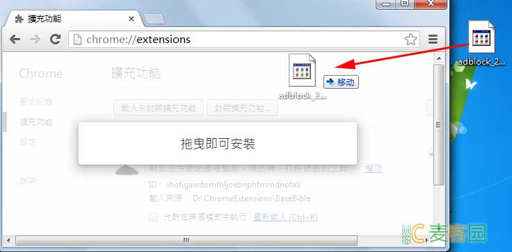

自从chrome网上应用店出来后，Chrome插件就无法下载插件，必须在线安装，安装后又自动把CRX文件删除，而且是那么的迅速...
以下是下载离线插件包的方法：
每个Google Chrome扩展都有一个固定的ID，例如
https://chrome.google.com/webstore/detail/adblock/gighmmpiobklfepjocnamgkkbiglidom
上面是一个Chrome扩展的完整URL，
在https://chrome.google.com/webstore/detail/adblock/之后的一串字符就是扩展的ID了。
即：gighmmpiobklfepjocnamgkkbiglidom
把这个扩展的ID复制下来。
用扩展ID替换下面URL中的“~~~~”
https://clients2.google.com/service/update2/crx?response=redirect&x=id%3D~~~~%26uc
将替换后的URL粘贴到IE或火狐中，注意不要粘到Chrome里，那样你还是无法获得CRX扩展文件包。
接下来下载保存即可。
将Google Chrome扩展的完整URL或者ID粘贴在这里，将得到下载Chrome扩展的完整URL，然后复制生成的URL到IE或者火狐中下载。 如果你正在使用IE或者火狐，直接点击生成的链接下载。
打开chrome，把CRX文件拖到chrome中，下方会有提示，继续即可，如图。
